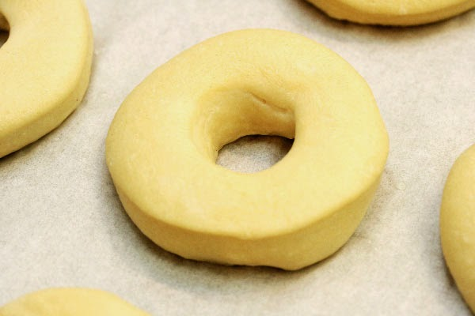

Homemade Donuts

A tasty Dutch treat
A donut is a kind of fried dough confectionary. Donuts
are typically ring shaped with a hole in the middle.
Bakers usually make oval shaped donuts, which are often
filled with custards or fruit preserves.
Ingredients
Steps
Mix eggs, milk, and water in a bowl
Place in fridge and let it sit for 30 minutes
Cut into small balls and press them flat, then punch hole in center
Place in bowl of oil at 350 degrees and fry for 60 seconds